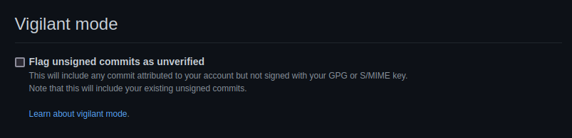

OpenPGP 公開鍵の期限を延長した

1年ほど前に「来年からまた短期の運用に戻す」と言ったな。 あれはウソだ。
厳密には有効期限を 2023-03-31 に延長した。 更新した公開鍵は以下の URI からインポートできる（既にインポート済みの場合は上書き更新される）。
$ gpg --fetch-keys https://baldanders.info/pubkeys/spiegel.asc
または
$ gpg --fetch-keys https://github.com/spiegel-im-spiegel.gpg
また拙作の gpgpdump を使えばインポートする前に公開鍵の内容をチェックできる。
$ gpgpdump fetch https://baldanders.info/pubkeys/spiegel.asc
または
$ gpgpdump fetch https://github.com/spiegel-im-spiegel.gpg
運用の切り替えが遅れているのは単純に本業が忙しくて腰を据えて調査ができないため。 何せ Yubikey のような暗号デバイスを使うかどうかも決めかねているのだ。
もうひとつは，昨年春に GnuPG 2.3 系が登場して鍵管理の仕方が若干変わっているのだが，こちらの調査も手つかずで，しかも Ubuntu のク◯野郎が頑なに 2.2 系を堅持してくれやがるという理由もある。 やっぱ Ubuntu は GnuPG を見捨てるのかねぇ。 APT の鍵管理もなんか妙なことになってるし。 最悪は自前でビルド&インストールかなぁ。
というわけで，来年こそは本気出す（笑） ということで。
そういえば GitHub に更新した公開鍵を登録し直したときに気がついたのだが「警戒モード（Vigilant mode）」てのがあるらしい。

SSH and GPG keys
今のところベータ版なんだと。
通常，コミットやタグに OpenPGP 電子署名が施されている場合は，署名に対応する公開鍵が GitHub に登録されていれば “Verified” のマークが付けられるが，警戒モードでは
Status Description Verified The commit is signed, the signature was successfully verified, and the committer is the only author who has enabled vigilant mode. Partially verified The commit is signed, and the signature was successfully verified, but the commit has an author who: a) is not the committer and b) has enabled vigilant mode. In this case, the commit signature doesn’t guarantee the consent of the author, so the commit is only partially verified. Unverified Any of the following is true:
- The commit is signed but the signature could not be verified.
- The commit is not signed and the committer has enabled vigilant mode.
- The commit is not signed and an author has enabled vigilant mode
と細分化されるそうな。 チームで開発を行っている場合はいいかもね。
ブックマーク
参考図書

- 暗号化 プライバシーを救った反乱者たち
- スティーブン・レビー (著), 斉藤 隆央 (翻訳)
- 紀伊國屋書店 2002-02-16
- 単行本
- 4314009071 (ASIN), 9784314009072 (EAN), 4314009071 (ISBN)
- 評価
20世紀末，暗号技術の世界で何があったのか。知りたかったらこちらを読むべし！

- 暗号技術入門 第3版 秘密の国のアリス
- 結城 浩 (著)
- SBクリエイティブ 2015-08-25 (Release 2015-09-17)
- Kindle版
- B015643CPE (ASIN)
- 評価
SHA-3 や Bitcoin/Blockchain など新しい知見や技術要素を大幅追加。暗号技術を使うだけならこれ1冊でとりあえず無問題。

- コマンドー (吹替版)
- アーノルド・シュワルツェネッガー (出演), アリッサ・ミラノ (出演), ダン・ヘダヤ (出演), レイ・ドーン・チョン (出演), マーク・L・レスター (監督), スティーブン・E・デ・スーザ (Writer)
- (Release 2015-04-24)
- Prime Video
- B00WAMAKZQ (ASIN)
- 評価
あらゆる障害を筋肉で粉砕する！ 脳みそをカラッぽにして見れる作品。